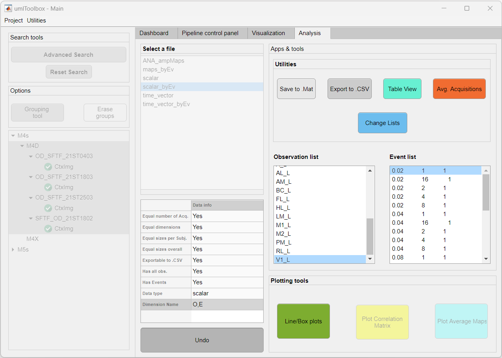

This tool allows one to reorder and subset observations and/or events.
In the following example, we will reorder the observation list and subset the event list. The data contains a total of 25 observations and 25 events:

To reorder the observations:
To subset a list:
To reset a list to the original items and order:
The edited lists can be saved to a .mat file and loaded for later use with the same dataset or a different one.
Note
If a different dataset is used, be sure that all the items from the saved list are contained in the original list of the selected data.
Here is an example showing how to save an edited list to a .mat file and loading it to a different dataset: